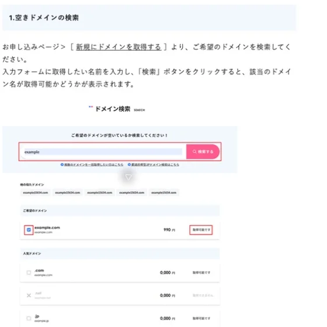

開業準備でホームページや事業用メールを整えるなら、最初に土台となるのが独自ドメインです。別のドメインへ切り替えることはできますが、メールアドレス、名刺、各種サービスの登録、検索からの入口まで連動するため、移行には想像以上の手間がかかります。
ここでは、名称の決め方から取得、DNS、更新管理までを、事業を止めないための順番で整理します。当事務所の minano-sr.com はXServer Domainで取得していますが、画面や契約条件ではなく、どの事業者で取得しても共通する判断軸を中心に解説します。
この記事のポイント
- 短さよりも「口頭で伝わる・入力を間違えにくい・長く使える」を優先する
- 契約者、管理者、決済、復旧手段を事業の情報として記録する
- 取得後はDNSでホームページとメールを接続し、更新切れまで含めて確認する

ドメインは「事業の固定住所」として決める
候補を考えるときは、屋号や法人名との一致だけでなく、電話で伝えたときに一度で通じるか、似た名称と取り違えられないかを確認します。ハイフンや数字を増やしすぎると入力ミスが起きやすくなる一方、意味の分からない略称も覚えてもらいにくくなります。商標や既存事業との混同がないかも、申込み前に検索しておくと安心です。
末尾の「.com」「.jp」などは、対象者に違和感がなく、継続して管理できるものを選びます。検索順位を狙って地域名やサービス名を詰め込むより、屋号と結び付いた短い名称を長く使う方が、名刺、請求書、採用媒体、メール署名を統一しやすくなります。
取得から利用開始までの6段階
| 段階 | 実務で確認すること |
|---|---|
| 1. 候補を決める | 屋号との一致、口頭での伝わりやすさ、類似名称、継続利用のしやすさ |
| 2. 空きを検索する | 取得サービスの検索画面で、希望する文字列と末尾の組合せを確認 |
| 3. 契約する | 契約者名、連絡先、決済方法、利用規約を確認して申込み |
| 4. 管理を固める | 多要素認証、復旧用連絡先、管理担当、更新通知の受信先を設定 |
| 5. DNSを設定する | ホームページ公開先とメールサービスから指定されたレコードを登録 |
| 6. 動作を確認する | スマホ回線を含む外部環境で表示し、事業用メールを送受信 |
XServer Domainの公式手順も、空きドメインの検索、アカウント情報、支払情報、内容確認、申込み完了という流れです。取得サービスによって表現は異なりますが、契約前に「誰の名義で、誰が管理し、通知をどこで受けるか」を決めることが重要です。
個人のアカウントに閉じ込めない
一人で開業するときも、ドメインを私用メールや普段使いのパスワードだけで管理すると、端末の故障やアカウント停止で復旧できないおそれがあります。契約先、管理画面URL、契約名義、登録メール、支払方法、更新時期、復旧方法を一つの管理表にまとめ、パスワード自体はパスワード管理ツールへ保存します。
担当者が増えた後も、ドメインの所有者は事業者のままにし、作業に必要な権限だけを渡します。制作会社や知人が設定する場合も、契約アカウントそのものを相手名義にしないことが大切です。
DNSは一行ずつ目的を確認する
取得したドメインを使うには、DNSでホームページの公開先やメールサービスと結び付けます。代表的なレコードには、ホームページの接続先を示すAやCNAME、メールの配送先を示すMX、所有権確認や送信ドメイン認証に使うTXTがあります。
DNSは既存の行をまとめて削除すると、ホームページだけでなくメールまで停止することがあります。指定されたレコードを一行ずつ照合し、変更前の状態を控えてから作業します。反映には時間差があるため、設定直後の一回だけで判断せず、別回線からの表示と外部メールアドレスとの送受信まで確認してください。
更新切れを防ぐ運用チェック
取得後に記録しておくこと
- 契約サービス、ログイン先、契約名義、管理担当
- 登録メールと復旧手段、多要素認証の保管方法
- 自動更新の状態、決済手段、更新通知の受信先
- DNSを変更した日、変更理由、変更前後の値
- ホームページとメールの外部環境からの確認結果
自動更新を有効にしても、カードの有効期限切れや通知メールの見落としは起こり得ます。更新通知を一人だけで抱えず、定期点検の項目へ入れてください。ドメインが失効すると、ホームページとメールが同時に使えなくなるため、開業後の優先度は高い管理資産です。
次は独自ドメインメールを設定する
ドメインを取得したら、次は事業用メールを接続します。当事務所ではGoogle Workspaceを使い、独自ドメインのメール環境を整えました。契約、ドメイン所有権の確認、MXレコード、送受信テストの順番は、「Google Workspaceで独自ドメインメールを始める」で詳しく説明します。
よくある質問
- ドメインとレンタルサーバーは同じ会社で契約する必要がありますか？
- 同じ会社である必要はありません。管理画面をまとめたい場合は同じ会社が分かりやすい一方、別会社でもネームサーバーやDNSレコードを正しく設定すれば利用できます。
- 取得後にドメイン名を変更できますか？
- 別のドメインを新たに取得して切り替えることはできます。ただし、メールアドレス、名刺、検索評価、各サービスの登録先も変更になります。長く使える名称を最初に選ぶ方が実務負担を抑えられます。
- 自動更新を有効にすれば更新管理は不要ですか？
- 完全に不要にはなりません。決済手段の有効期限、登録メールへの通知、管理アカウントへログインできるかを定期的に確認し、退職者個人のアカウントだけに管理を任せない運用が必要です。
- ドメインを取得しただけでホームページやメールは使えますか？
- 取得だけでは使えません。ホームページの公開先やメールサービスを用意し、DNSでドメインと各サービスを結び付けたうえで、表示と送受信を確認します。
当事務所のサポート
当事務所では、開業後に増えていく従業員情報や手続き資料を、安全に受け渡せる業務フローまで含めて整理します。ドメイン取得そのものの代行ではなく、労務管理で誰が何を管理するか、どの情報をどの経路で共有するかを一緒に設計します。